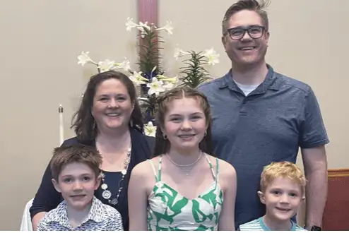

Contributed / Ewing-Lee family
WEST FARGO — When Elizabeth Ewing-Lee was working toward her doctoral degree in psychology, she didn’t know her own children would become her best educators on neurodiversity.
Not until her two sons began responding in atypical ways did something finally click.
“They both struggled with behavioral control in preschool, to the point where we held my oldest son back from kindergarten a year to give him more time to grow up,” Ewing-Lee says.
But when Caleb started school, the behaviors worsened.
“He couldn’t seem to control himself — touching other kids, making strange noises, and getting sent to the principal’s office,” she says.
While doing occupational therapy, Caleb’s therapist noted a cognitive disconnect between what he knew was right and being able to engage in that behavior.
“That moment was the light switch,” Ewing-Lee says. “I thought, ‘Wait a second, I’ve taught this, I’ve known it for years,’ but I had not experienced it myself.”
Well-educated in theory of what ADHD, or attention-deficit/hyperactivity disorder, is, Ewing-Lee and her husband, Greg, moved forward with an assessment and a more specific plan to help Caleb, and eventually his brother, Micah, on a path of adjustment and success.
Streams of Faith Award

As part of the education committee at Flame of Faith United Methodist Church, Ewing-Lee was present at the Dakotas Conference’s annual gathering, this year in Sioux Falls, South Dakota, to help receive the Streams of Justice Award for her church’s attentiveness to those with neurotypical brains, both within their church and the community at large.
“We did not know it was coming,” Rev. Sara McManus says of the award, noting her gratitude for the accompanying $500, which will help fund a neurodiversity-education event, as well as a Bible focusing on Christ’s words about caring for those in poverty.
The positive responses immediately afterward also caught her off guard. Among them, one pastor quietly shared, “I don’t know if you knew I was on the (autism) spectrum.”
“We had all of these conversations centering around how so many don’t always feel like the church is the first place to be” as a neurodiverse individual, McManus says. “It became a moment of bringing it a little more into the light.”
Their work over the past 18 months included an event last fall to educate the community.
“We asked some speakers to come in and talk about the way their brains and bodies work in connection with how they understand God,” McManus says.
Another event, led by autism advocate John David Berdahl, featured a presentation and panel discussion sharing community resources.
“We’re also now connected to the local CHADD organization,” a support for Children and Adults with Attention-Deficit/Hyperactivity Disorder, which will join forces with Flame of Faith this fall with support groups and training.
The church will also host another community event with neurodiverse individuals sharing their experiences.
What is neurodiversity?
Jane Indergaard, co-founder and coordinator of the local satellite chapter of CHADD, says that though neurodiversity is sometimes more broadly defined as any mental illness or disability, not all mental illnesses are neurodiverse, and in this context, it mainly includes higher-functioning mental disabilities like ADHD, autism and Tourette’s syndrome; all of which mask an often invisible struggle.

“Of any population or subgroup that should be embracing this, I believe it should be faith-based communities,” Indergaard says, “because love has to start there.”
Though we’ve become better societally at decreasing mental-health stigma, she adds, there’s a lag within some educational and faith-based systems.
“People are trying, but I would like a bigger push from our faith communities,” she says, noting, for example, that parish nurses could address mental and behavioral health more, along with physical and spiritual health.
“It’s a question of, ‘How much do these kids have to adapt?’ versus, ‘Does society need to embrace (neurodiversity) better?’ ” she says.
This might include an employer giving someone whose brain has a time deficit a more accommodating schedule.
“I don’t have the answer of how to do complete integration,” she says, “but it has to start with wanting to understand.”
She points to two local college students she’s met with combinations of autism and ADHD who were struggling in life and not always treated well.
“Now that they’re receiving support, they’re thriving leaders in their classes and organizations,” she says.
When it comes to faith, she asks, “Are we stifling people’s God-given potential by not learning about these things and being more flexible?”
God emphasizes justice
McManus notes a reference in the Old Testament, Amos 5:24, relating to the topic: “But let justice roll down like waters. And righteousness like an ever-flowing stream.”
“Part of our mission in life is to bring God’s justice into the world,” she says. “And so the advocacy or education or work within a justice movement is the focus of this award.”
This meant first noticing how many neurodivergent children and adults were in their community, struggling to exist and worship in a quiet, still environment.
“That led us to doing a lot of research and applying for a grant,” McManus says, leading to funds that helped them create calming spaces for those who might become overwhelmed, along with adding fidget spinners and other soothing objects to bags for children, and educating the community on challenges those with neurodiverse brains face.
“We’ve got kids with ADHD who spend a lot of time at school trying to focus,” she says. “They’re working so hard all day. Then they come to our Wednesday-night worship service, and there’s no way they can focus, so they’re running around.”
McManus realized that by supplying wobbly chairs and other supports, things began to change.
“There was this moment when I realized all four of my wildest kids were sitting down and looking me in the eye while I was talking,” she says.
She also has adjusted her preaching, offering more black-and-white, scientific explanations, rather than so many metaphors.
“It’s about changing how I understand (differing brain functioning) and how I teach to connect with their inputs and ability to learn,” she says.
While it involves extra time and effort, McManus says, it’s worth it.
“We know we can’t meet everyone’s needs immediately,” she says. “So, we go with the best of intentions, and when we make mistakes, we figure it out and try to do better,” adding that while “the incredible diversity of God challenges us,” it also “calls us into something bigger and greater.”
McManus encourages those who are neurodiverse, or who have loved ones who are neurodiverse, not to give up on God and going to church, but “to keep being an advocate for yourself and your family, and remind others that all of God’s creation is incredible.”
“If you’re needing to remind your pastor or organization that Christ did everything to include everyone, that’s the least we can do as churches,” she says. “Keep challenging whatever institutions need to be challenged. We are all worthy of God’s love. And God gives it without expecting anything in return.”
[For the sake of having a repository for my newspaper columns and articles, I reprint them here, with permission, a week after their run date. The preceding ran in The Forum newspaper on August 11, 2023.]